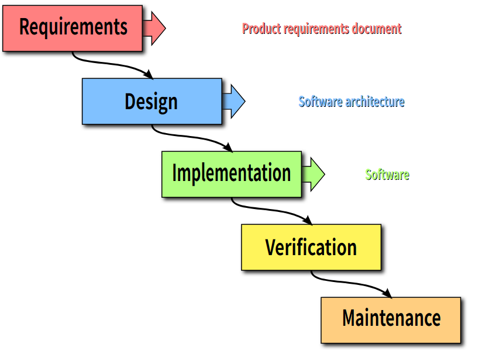
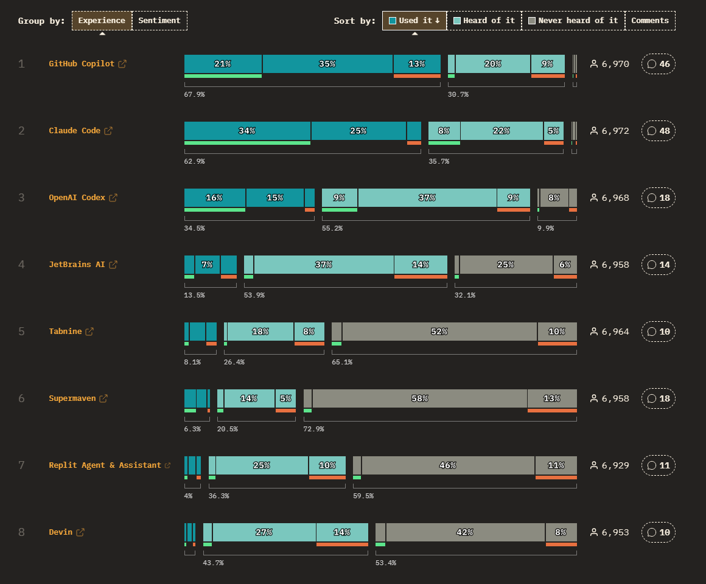
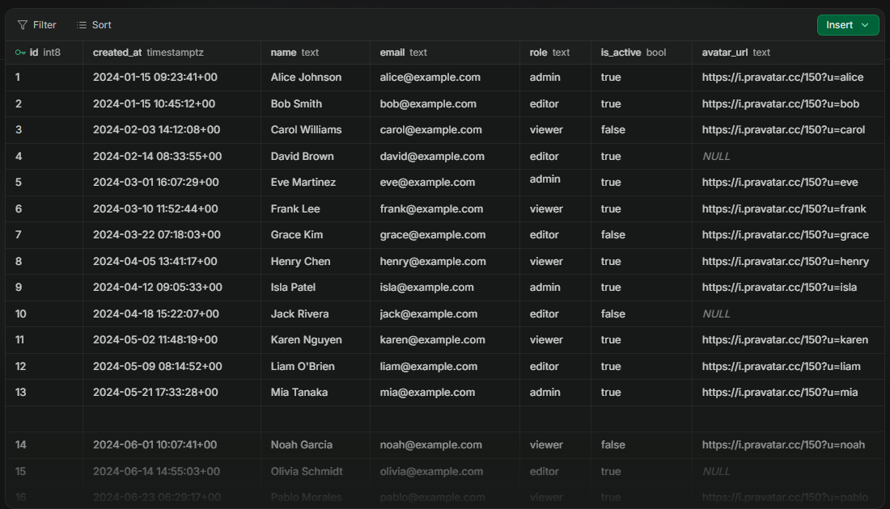
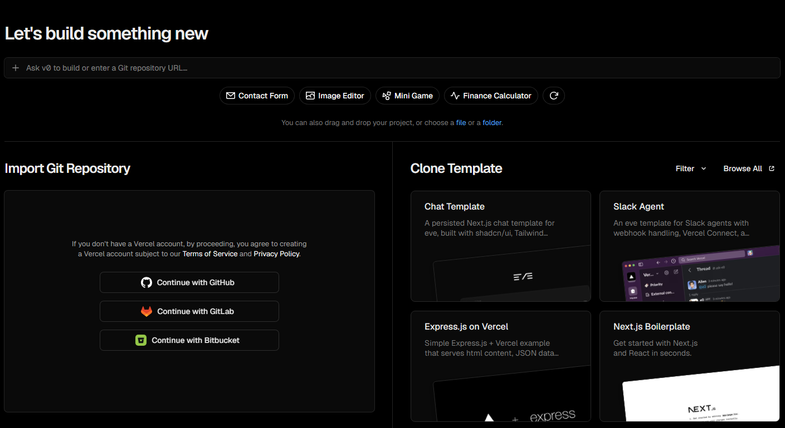
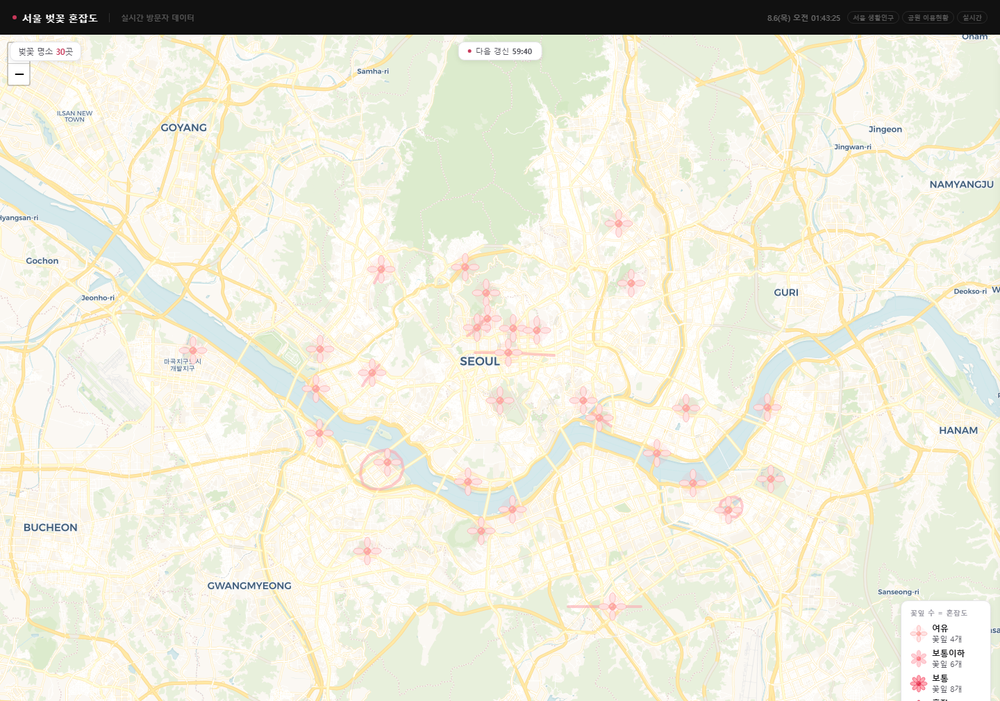
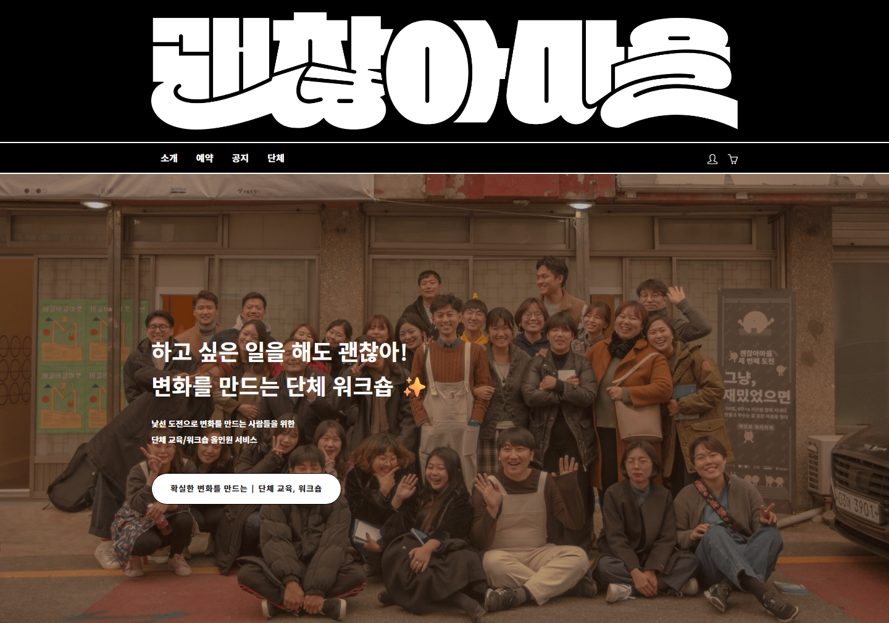
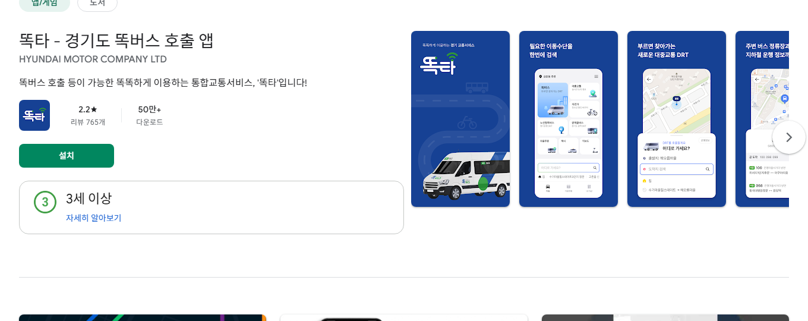

03 — 바이브 코딩
LLM (Large Language Model)
언어를 입력받으면 통계학적으로 가장 적절한 출력을 내도록 학습된 AI 모델
GPT-5, Gemini 3.0, Claude Fable / Mythos —
"AI 성능이 좋다"는 말은 보통 모델의 성능을 가리킵니다
생성형 AI가 더 큰 범위 — 이미지·영상·음성 생성 모델을 포괄하고,
LLM은 그중 언어에 특화된 분류


(주)인바이즈
코딩 없이 서비스를 만드는
(주)인바이즈 박철현
인간이 하기 번거롭고, 실수의 위험이 있는
계산을 대신 해줄 수 있는 기계
컴퓨터의 등장으로 사람들은
복잡한 수학 계산에서 비로소 자유로워졌습니다
이 컴퓨터를 잘 쓰기 위해 GUI, 운영체제, 웹 브라우저가 —
그걸 또 잘 쓰기 위해 더 많은 프로그램이 지금도 태어나는 중
ENIAC (1945) — U.S. Army · Public Domain
성능이 좋아진 컴퓨터에게 이제는
인간이 하지 않아도 되는 일을 맡기기 시작했습니다
프로그램도, 그걸 쓰는 환경도 폭발적으로 늘었습니다
휴대폰, IoT, 태블릿, 자동차 …
수요가 커진 만큼 언어, 프레임워크, 라이브러리 생태계도
계속 진화했습니다
프로그램을 만드는 일 자체가 계속 쉬워져 온 역사
프로그래밍 추상화의 계단 — 도구는 계속 쉬워져 왔다
AI가 나오기 전에도 생태계의 성장 덕분에 전공하지 않은 사람이 코딩하는 일은 드물지 않았고, 진입장벽은 꾸준히 낮아지고 있었습니다.
소프트웨어를 만들어가는 방법, 여러 사람이 합심해 하나의 프로젝트를 수행하는 방법, 수학적 메커니즘으로 버그 없이 원하는 결과를 만드는 알고리즘을 연구하는 학문으로 변화했습니다.
더 깊고 복잡한 문제를 정의하고 해결하는 것. 단순히 개발만 할 줄 아는 전공자는 일반인과 큰 차이가 없습니다.
ChatGPT와 Claude, 그리고 미국과 중국에서 만들어지는 다양한 모델이 코딩을 해주기 시작했고, 남아 있던 진입장벽을 완전히 허물었습니다.
과거 집안 전선이나 전화기를 연결해주던 기술자가 사라진 것처럼, 숙련자의 분야에 초심자가 바로 접근할 수 있는 도구가 생겼습니다.
셀프 인테리어, 차량 개조, 자가진단 키트가 가능해진 것처럼 — 쉽사리 손댈 수 없었던 프로그램 개발도 이제 직접 손댈 수 있는 영역이 됐습니다.
전기 배선
할 줄 아는 일
수도꼭지 설치
할 수 없는 일
전기 배선을 할 줄 안다고 수도꼭지를 설치할 수는 없다 —
도구가 아무리 좋아져도, 할 수 있는 것과 없는 것을 구분하는 안목은 사람의 몫입니다
왼쪽은 AI에게, 오른쪽은 여러분에게 — 오늘 실습의 역할 분담이기도 합니다
O — 획득할 수 있는 데이터
X — 획득할 수 없는 데이터
O — 가공할 수 있는 일
X — 가공으로 해결되지 않는 일
두 질문에 모두 '예'라면 — 만들 수 있습니다. 이제 직접 판단해봅시다
기관마다 흩어진 일정을 모아 달력으로 보여줍니다 — 만들 수 있을까요?
세 가지 질문을 모두 통과 — 데이터가 있고 · 써도 되고 · 정보 접근 문제를 실제로 해결합니다
실행만 하면 위험 지점이 지도에 표시됩니다 — 만들 수 있을까요?
판단 — 조건부로 가능합니다. 컴퓨터가 '볼 수 있게' 만들어줘야 합니다.
바꿔볼 아이디어 — 주민 신고 앱 · 사진 분석 프로그램 · 신고 밀집 지도 · 담당 부서 전달 시스템
사람이 새로고침하는 일을 컴퓨터가 대신하면 될 것 같은데 — 만들 수 있을까요?
판단 — 만들 수는 있습니다. 하지만 써도 되는가는 다른 문제입니다.
자동으로 알려주는 것과 자동으로 구매하는 것은 서로 다른 문제 — 취소표 알림까지만 만들고, 결제는 사람이 직접
버스가 언제 오는지 몰라 불편합니다 — 앱을 만들면 문제가 해결될까요?
판단 — '언제 오는지 모르는 문제'는 풀지만, '버스가 없는 문제'는 그대로입니다.
진짜 해결책과 함께 가야 합니다 — 수요응답형 교통 · 마을택시 연계 · 전화 예약 병행
컴퓨터가 알 수 있는 데이터가 있는가 — 없다면 사진·센서·사람의 입력으로 채워야 합니다
약관 · 개인정보 · 권한 — 코드를 작성할 수 있다는 것과 사용해도 된다는 것은 다른 문제입니다
프로그램 뒤에 현실의 행동이 이어져야 문제가 풀립니다 — 앱은 해결책의 일부입니다
이 세 가지를 구분할 수 있을 때, 바이브 코딩은 현실의 문제를 해결하는 도구가 됩니다
한 번 알기만 하면 누구나 할 수 있습니다
언어를 입력받으면 통계학적으로 가장 적절한 출력을 내도록 학습된 AI 모델
GPT-5, Gemini 3.0, Claude Fable / Mythos —
"AI 성능이 좋다"는 말은 보통 모델의 성능을 가리킵니다
생성형 AI가 더 큰 범위 — 이미지·영상·음성 생성 모델을 포괄하고,
LLM은 그중 언어에 특화된 분류
사람이 설정한 목표를 달성하기 위해 스스로 전략을 짜고 행동하는 시스템
컴퓨터 자동화, 업무, 코딩, 자율주행 — 목적에 따라 구분됩니다
Cursor, Claude Code, Codex — 모두 코딩 에이전트입니다
Computer Use — 사용자 컴퓨터를 실제로 조작하는 에이전트.
귀찮은 테스트도 자동으로 수행합니다

코드 작성을 AI에 위탁하고, 사람은 자연어로 프로그램을 개발하는 방법론
숙련자에게는 시간 절약,
초보자에게는 진입장벽의 소멸
GitHub Copilot · Cursor · Codex · Claude Code · Gemini CLI
Antigravity · Opencode · Windsurf · v0 · Lovable


소프트웨어는 어떤 순서로 만들어지는가

Waterfall model — Wikimedia Commons · CC BY 3.0
Agile 반복 주기 (도식) — cf. Manifesto for Agile Software Development, 2001
AI 등장 전까지는 프로그램의 속성에 따라 두 방법론 중 적절한 것을 택하는 것이 트렌드
Waterfall보다 Agile의 주기가 짧아졌던 것처럼, 바이브 코딩의 주기는 Agile보다 더 짧아졌습니다.
작은 기능을 하나하나 점진적으로 실행시키고, 테스트해야 합니다.
이 상태를 유지하며 만드는 것이 바이브 코딩의 리듬입니다.
어떤 모델? Cursor? Codex?
하네스 프로그래밍? 프롬프트 엔지니어링?
잘못 고르면 뒤처질 것 같지만 —
그렇게 깊게 고민할 문제가 없습니다
AI 시대에서는 행동하지 않는 게
가장 치명적인 손해
하나 골라 써보고 마음에 안 들면 그때 바꾸면 됩니다.
이제 그 '아무거나'를 함께 골라봅시다
개발자 평가 1위, 가장 큰 생태계

버전 관리의 압도적 표준

초보자에게 '그나마' 쉬운 선택 (필수 아님)
웹 배포 생태계 1위
추천 기준은 생태계의 크기
State of AI 2026 설문 기준, 개발자 평가 랭킹 1위 —
사용자 수도 GitHub Copilot과 1·2위를 다툽니다
강사의 경험 — Cursor로 시작했다가
무거운 설치가 싫어 가벼운 Claude Code로

출처 — State of AI 2026 · 2026.stateofai.dev
짧아진 프로세스 주기를 관리하기 위한 필수 도구
버전 관리 프로그램의 압도적 1등 —
이 생태계를 이길 도구는 당분간 없습니다
"어제 버전으로 되돌리기", "팀원 작업과 합치기"가 가능해지는 안전장치
commit — branch — merge : 언제든 되돌릴 수 있는 기록
필수는 아닙니다 — 성격에 따라 필요할 수도, 아닐 수도
쉽게 말해 서비스를 위한 외장하드를 하나 사는 것
킬러 기능은 로그인 및 인증 —
잘못 만들면 위험한 부분을 대신 관리해줍니다
Google 로그인 같은 소셜 로그인도 지원

Supabase 테이블 에디터 — 출처: supabase.com/database
모든 프로그램은 그것이 실행되는 컴퓨터가 필요합니다
그 컴퓨터를 켜두는 게 호스팅,
그 컴퓨터에 프로그램을 설치하는 게 배포
오늘은 웹 애플리케이션 —
웹 배포 생태계 1위 Vercel
AWS · GCP · Azure도 있지만 초보자에게는 아직 너무 어렵습니다

Vercel 배포 화면 — 출처: vercel.com/new
청년정착 · 관광로컬상권 · 고령자교통약자
일을 할당해야 부하 직원이 움직입니다. "내가 A를 원하니까 그거 만들어와"라는 지시로는 원하는 결과를 얻을 수 없습니다.
올바르고 적절한 문제를 정의해서 제시하는 것. 그것이 전부입니다.
아무리 읽어도 이해되지 않는 문제가 있고, 한 번만 읽어도 바로 이해되는 문제가 있습니다. 여러분이 내야 할 문제는 후자입니다.
"진주의 청년 지원 정책은 기관마다 흩어져 있어, 20대 구직자가 받을 수 있는 지원을 한자리에서 확인할 수 없다"
"진주성을 둘러본 관광객은 다음 행선지 정보를 찾지 못해, 근처 상권을 놓친 채 도시를 일찍 떠난다"
"거동이 불편한 어르신은 저상버스가 언제 오는지 알 수 없어, 정류장에서 무작정 기다린다"
세 문장의 공통점 — 누가 · 언제 · 무엇 때문에 불편한지가 한 문장에 담겨 있다
모든 문제는 가능한 가장 작은 단위로 — 쪼갤수록 쉬운 문제가 됩니다
"이쯤이면 잘게 쪼갰는데?" 싶더라도 한 번 더
쪼갤 방법을 모르겠다면, 다양한 방법과 방향으로 재해석해보세요
문제를 잘 정의하는 순간,
그건 더 이상 문제가 아니라 등대가 됩니다
바이브 코딩은 이미 어디까지 왔나 — 성공과 실패
문제 — 벚꽃 명소 정보는 많지만,
'지금 어디가 덜 붐비는지'는 알 수 없다
해결 — 서울시 생활인구 공공데이터와 지도를 결합해
명소 30곳의 혼잡도·개화 상태를 60분 주기로 표시
비개발자가 Claude Code를 처음 사용한 날 만든 공개 서비스.
오늘 실습과 같은 스택 — Claude로 만들고 Vercel로 배포

2026.08.06 접속 확인 — blossom-map-eight.vercel.app
문제 — 이용자가 하고 싶은 활동과 순서를 스스로
표현하기 어려워, 지원자가 일정을 대신 결정해야 했다
해결 — 색과 활동을 직접 골라 하루 시간표를 만들고
완료 여부를 체크하는 도구. 사회복지사가 바이브 코딩으로 제작
통합돌봄 현장에서 실제 사용 중이며 활동 결과가 기록으로 축적.
작은 대상 · 명확한 행동 · 눈에 보이는 결과
운영기관 — 서울장애인종합복지관 · seoulcbid.or.kr
문제 — 청년이 지역에 살아볼 이유도,
머물 공간도 없다
해결 — 원도심의 빈 공간에서 외지 청년들이 함께 살며
지역 프로젝트·창업·취업으로 연결. 마을호텔·로컬여행으로 확장
정착 시도 약 30명 중 8년이 지난 지금도 20여 명이 지역에 잔류.
일부는 결혼·출산·창업으로 이어짐

2026.08.06 접속 확인 — dwvil.com (예약·워크숍 운영 중)
문제 — 버스가 드문 농촌·외곽 지역의 고령자는
병원과 시장에 가기 어렵다
해결 — 호출하면 AI가 실시간으로 경로를 구성하는
수요응답형 버스. 앱이 어려운 어르신을 위해 전화호출 병행
누적 이용 1,197만 명 · 여주 가남읍 하루 이용 224명 → 504명.
성공 요인은 기술이 아니라 비디지털 대체수단을 함께 둔 것

Google Play — 다운로드 50만+ (2026.08.06 확인)
O목포 — 정착 시도 30명 중 8년 뒤에도 20여 명이 지역에 잔류
X영암 — 참가자 118명 중 실제 전입은 2명
참가자 수가 아니라, 주거와 소득을 확보하고 남은 사람이 몇 명인가?
O서초 — 사진+설명을 상세페이지로 바꿔주는 한 가지 문제에 집중
X전환 측정 없는 대규모 플랫폼은 효과 판단이 어려움
몇 개를 만들었는가가 아니라, 실제 주문과 방문으로 이어졌는가?
O경기 — 누적 1,197만 명, 앱과 전화호출을 함께 제공
X은평 — 6억 원 투입, 반년간 다운로드 10여 건
기능이 많은가가 아니라, 대상자가 실제로 호출하고 이동을 완료하는가?
출처 — 국내 지역문제 바이브코딩·디지털 서비스 사례집 (2026.08.05 기준 공개자료)
✕ 사회적 목표 — "청년들이 지역을 떠나지 않게 하는 앱"
너무 넓고 추상적이라 무엇을 만들어야 할지 알 수 없다
✓ 잘 정의된 문제 — "취업 준비 청년이 자신의 조건에 맞는
채용공고와 주거지원 정책을 한 번에 찾기 어렵다"
입력 — 희망 직무·지역·자격 · 처리 — 공고 검색과 자격 비교 · 출력 — 신청 가능한 목록과 마감일 · 현실의 행동 — 청년이 실제로 지원한다.
좋은 문제는 이 네 칸이 채워지는 문제입니다
참가자의 주거·일자리·프로젝트를 매칭하고 30·90·180일 체류를 관리하는 도구
신청자 수가 아니라 실제 전입 · 잔류 · 소득활동을 측정
현재 위치 기준 영업 중인 점포·체험·화장실 정보를 보여주고 QR 쿠폰을 발급하는 웹앱
QR 발급 → 실제 방문 → 구매로 이어지는지 측정
전화로 받은 이동 요청을 지도에 표시하고 마을버스·봉사차량 운행표를 만드는 도구
요청 대비 완료율 · 평균 대기시간 · 전화 이용 비율을 측정
가장 잘 맞는 문제의 형태 — 범위가 작고, 결과를 곧바로 확인할 수 있는 문제
추가 질문이 있으시면 언제든지 연락주세요
(주)인바이즈 박철현
이제 직접 만들 시간입니다
vibe-coding-course-kappa.vercel.app